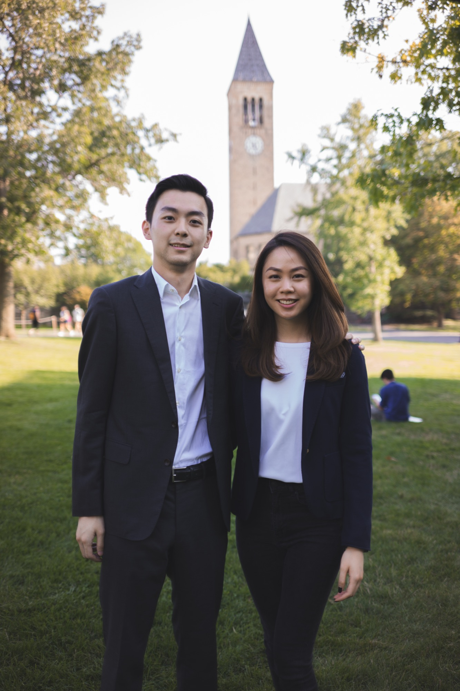
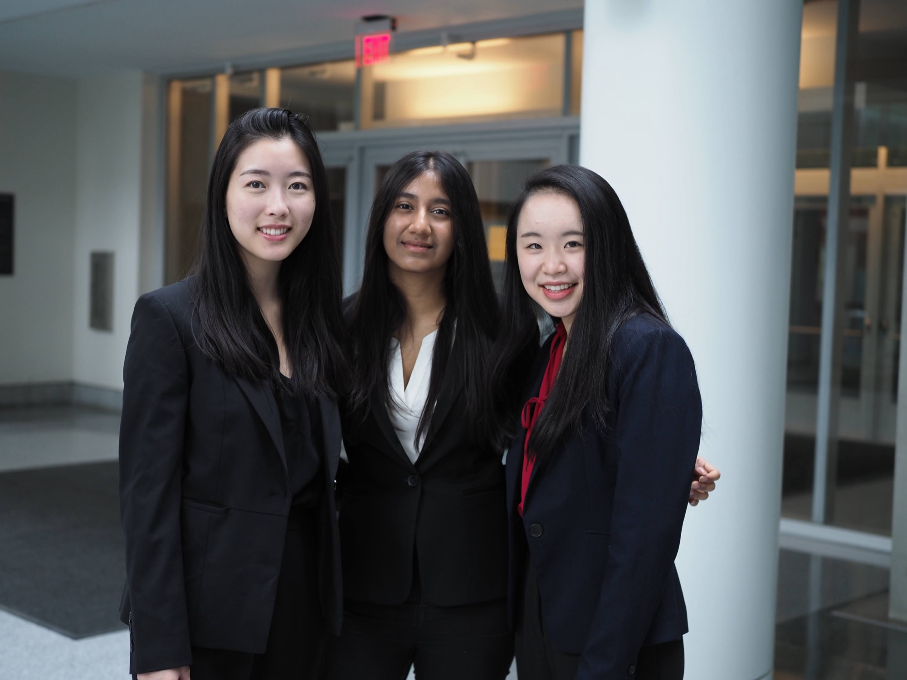

Any major, any background. A community for Cornell students building careers together.
Fall 2026 recruitment
Who we're looking for
About GCCGCC is open to every Cornell student interested in business and professional development — any background, any major. Our members come from a wide range of majors, geographies, cultures and professional interests, and that range of perspective is our greatest strength.
We look for high-achieving, motivated students who want to grow, professionally and personally, and to pay it forward. New members join a 10-week professional development series led by experienced upperclassmen, are paired with a mentor, and become part of a family that lasts well beyond Cornell.

How recruitment works
Apply-
01
Breaking into Business Clubs (with CFC)
Cornell's largest business-club event of the semester, hosted with CFC — how club recruitment works and how to prepare.
9/3Time & place to follow -
02
ClubFest
Find our table at Cornell's ClubFest and come say hello — no sign-up needed.
9/5Time & place to follow -
03
Information session 1
Learn what it means to be part of the GCC community and meet our members.
9/8Time & place to follow -
04
Resume review (with IIC)
Get your resume reviewed with IIC and connect with our members before you apply.
9/9Time & place to follow -
05
Consulting panel (with SEGC)
A panel on consulting careers, hosted with SEGC.
9/10To be confirmed -
06
Information session 2
The same session again, for anyone who missed the first: what it means to be part of the GCC community, and a chance to meet our members.
9/14Time & place to follow -
07
Application deadline required
Applications close. The application form opens from the Apply button.
9/16Closing time to follow -
08
Deliberations
Every application is read in full; first-round invitations follow.
9/17 -
09
First-round interviews by invitation
Invite only. Interviews run in time slots; attire is business professional.
9/18Invite only -
10
Final-round interviews by invitation
Interviews run in time slots; attire is business professional.
9/19Invite only -
11
Decisions
You hear from us within a few days of final rounds.
After final rounds
Times and venues are posted as each event is confirmed — join the mailing list below to hear first.
Preparing
Book a coffee chat-
The application
A short written application, submitted through our online form — the Apply button opens it. Resume review with IIC runs beforehand if you want a second pair of eyes; applications close September 16.
Application prompts will be posted here before the Fall 2026 form opens.
-
What the first round is like
A conversation with two members, in a time slot, by invitation. Attire is business professional. Final rounds follow the same format.
-
No experience expected
You don't need prior finance or consulting experience — GCC is open to any background, any major. The technical and qualitative skills are what the 10-week new member series is for.
What year should I be to apply?
Any year. Most new members join as first-years or sophomores, and we welcome applications from every class.
If I didn't get accepted in a past semester, should I still apply?
Yes, please do. Applying again is common, and every application is read fresh each semester.
Apply
Questions? Email usFall 2026 recruitment is open to every Cornell student — any major, any background. Applications close September 16
A mentor, a 10-week professional development series and a network of 100+ alumni — it starts with a short written application.